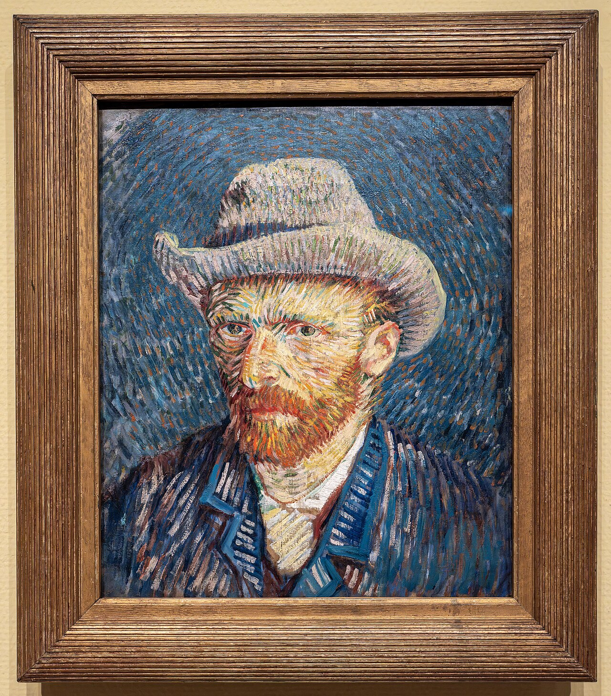

1853–1890 · Dutch
Vincent van Gogh
Van Gogh developed a deeply personal language of energetic marks and intense colour in the final decade of his life. He began as a self-taught artist and went on to make landscapes, portraits, still lifes, and night scenes feel astonishingly immediate.
His use of contrasting colours and rhythmic brushwork influenced generations of modern artists, who saw in his work a new permission to make feeling visible.
- The Starry Night
- Sunflowers
- Bedroom in Arles